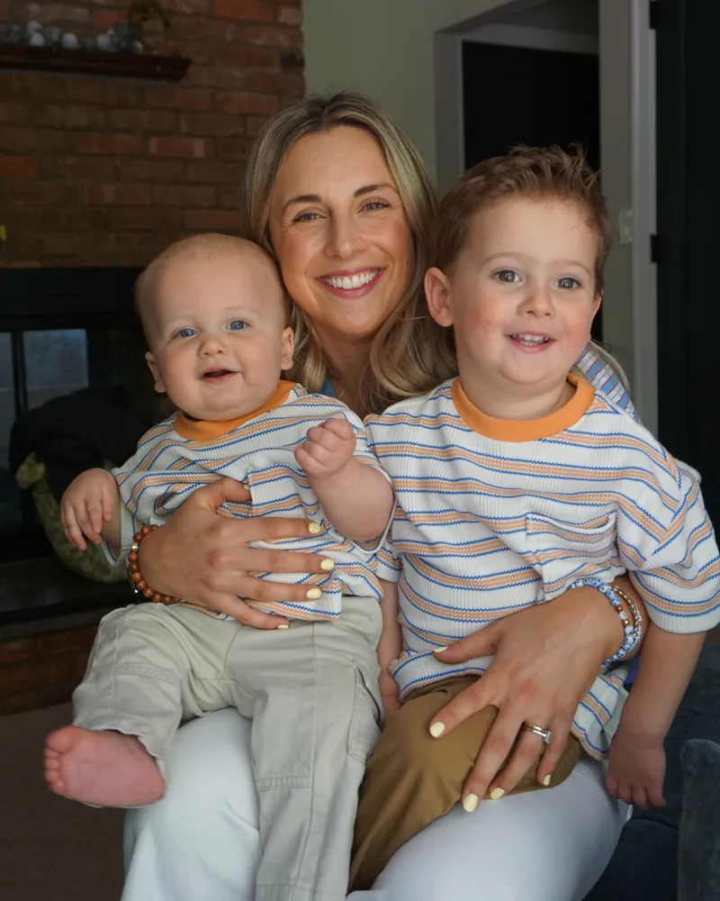

Foundational Reading PD
Phonemic awareness, phonics, spelling and morphology PD that teachers use the next morning.
Carly Mulvey helps K-5 teams turn reading research into daily practice, with coaching, data and curriculum support that outlasts the PD day.
Districts across the region are adopting evidence-based reading instruction. The research says what to teach. The hard part starts the week after training.
Landing Literacy keeps working beside your teachers until the training sticks.
Six kinds of support, mixed to fit what you already have.
Phonemic awareness, phonics, spelling and morphology PD that teachers use the next morning.
Screener training, intervention groups built from diagnostic data, and the progress monitoring and I&RS routines that keep groups moving.
Scope and sequence, pacing guides, literacy block design, standards crosswalks and report-card rubrics that match what you teach.
Compare options, run pilots, then launch your choice with training, demo lessons and year-one check-ins.
Plan, model, debrief. Demo lessons, data chats and grade-level meetings, in person or virtual.
Pacing guides, intervention binders and decodable text guides built for your program. At Make-and-Take sessions, teachers leave with materials in hand.
Start anytime, with one session or a full year. Here's how the work lines up with the school calendar.
Summer
Build pacing guides, literacy blocks, report-card rubrics and standards crosswalks with each grade. Set up sound walls and topic-sorted classroom libraries.
Fall
Train teachers on the screener and program before day one. Then model lessons, give diagnostic surveys, form intervention groups and hold the first data chats.
Winter
Read middle-of-year data by grade: who jumped a tier, who slipped, which subskill lags. Then regroup, model small groups and tighten I&RS plans.
Spring
Review end-of-year data, pilot programs, revise curriculum and plan next year with the teachers who'll teach it.
Most of the day happens in classrooms, not a conference room.
Built around preps, grade-level meetings and push-in time.
Ten questions, two minutes. Get a fit rating, your top three opportunities and the scores Carly would track with you.
Answer for your district as it is today. There are no wrong answers, and nothing leaves this page unless you share it.
A fit ratingFrom strong fit to light-touch, with an honest "not right now" when that's the answer.
Your top three opportunitiesRanked, with what the work would look like.
The scores to watchThe measures that show it's working.
I am humbled to work with so many outstanding teachers and leaders and I count you among the very best. We are very fortunate to have you in such an important and critical role.
You made me feel SO much better about teaching [our phonics program]. I look forward to working with you again soon!
You took the time to not only listen to the mom, but you made her feel that her input was valued. You answered all of her questions with precision and facts. I feel very fortunate to have you on our team! Your expertise is truly valued and appreciated!!
We are so proud of how far he's come and we have definitely noticed a difference at home when he's reading.
I always walk away with so much knowledge each time we work with you!
Thank you for helping me out all of the time with data and taking the time to explain!
She has really come so far and I see the progress.
One partnership, year by year. References available on request.
K-1 only
A phonics and advanced word study program in K-1 only. Teachers lacked the background knowledge to teach its phonograms.
Balanced literacy
Balanced-literacy blocks in K-5: workshop model and guided reading for both word recognition and language comprehension.
No screener
No universal screener.
2023-24
Trained staff on the universal screener and phonics patterns before day one. Modeled lessons in K-1. Turned diagnostic inventories into intervention groups. Led beginning- and middle-of-year data chats. Revised curriculum to the new NJ ELA standards.
2024-25
Built vertically articulated K-5 pacing guides and report-card rubrics. Trained grade 3 in phonics and grades 4-5 in morphology. Trained I&RS and Child Study Teams. Piloted Tier 1 programs.
2025-26
Rolled out a new K-5 Tier 1 curriculum with demos and debriefs. Launched morphology, grammar and advanced word study in grades 4-5. Gave every teacher an intervention binder.
2026-27
Program training, data analysis days and curriculum check-ins, already on the calendar.
more to come
The results
The at-risk share fell every year, from 22% to 17% to 14%: an 8-point drop in two years.
The district has brought Carly back every year since 2023.

I've taught kindergarteners their very first sounds and coached district teams through brand-new curricula. The goal has never changed: every child reading.
I began in kindergarten and first grade classrooms, became a literacy specialist, and then served as a regional coach with NJTSS-ER at Rutgers, supporting early literacy work across 24 New Jersey districts. In 2022-23 I was named Teacher of the Year at Lincoln Elementary in Pompton Lakes.
In 2023, I founded Landing Literacy and started partnering with districts directly. I still do my best work in classrooms, right next to teachers.
I believe every child can learn to read, and every child deserves a teacher who knows how to teach them.
We know how to teach reading. The research has been clear for decades. The hard part is getting it into every classroom, every day, and that's exactly where teachers get left on their own.
I started in a kindergarten classroom, so I know what teachers are up against. I also know what happens when someone stays: teachers grow confident, groups start moving, and kids who were stuck begin to read.
That moment is why I do this work.

School districts in New Jersey, New York, Connecticut and Pennsylvania. Carly works on site, in classrooms and team meetings, with short virtual check-ins between visits.
School districts. Carly works with administrators, coaches, teachers, interventionists and special education teams.
K-5: phonemic awareness and phonics in the early grades, morphology, fluency and curriculum in grades 3-5.
Carly offers single PD sessions and workshops, but a full school year works best: training, then coaching, data chats and check-ins. Many districts return year after year.
All school year, plus summer planning.
Yes. Most partnerships start with the program you own: filling its gaps, pacing it and coaching teachers to teach it well.
Most structured literacy programs, screeners and diagnostic assessments in elementary classrooms. Not sure about yours? Just ask.
Yes. Carly helps teams weigh options against the research, run pilots and roll out their choice.
Yes. Carly trains Child Study Teams on literacy screening, guides I&RS procedures and goals, and plans with resource room teachers.
Yes. Carly accepts district purchase orders and provides a W-9 on request.
Tell Carly about your district.
You'll hear back from Carly herself.
Carly has your note and will reply to the email you gave.